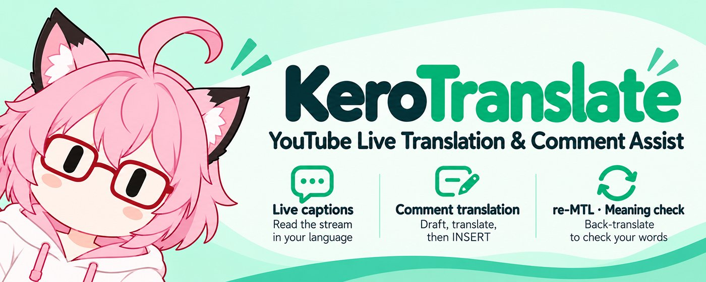

Chrome extension · Beta
A more connected stream.
KeroTranslate brings live captions, comment translation and a meaning check to YouTube Live.
Live captions
Read speech and its translation while you watch.
Comment translation
Write in your language, translate, then insert into live chat. You choose when to send.
Meaning check
Back-translate your draft to help check its meaning before posting.
Available on the Chrome Web Store. Bring your own provider API keys for speech recognition and translation. Provider charges and usage limits may apply.
Chromeウェブストアからインストールできます。音声認識・翻訳には、ご自身のAPIキーが必要です。
Your data, explained
Audio and text go directly to the providers you select. Read about consent, local storage, deletion and the differences between the store build and the existing GitHub Beta.
Get started: API keys
Step-by-step setup — English · APIキーの取得方法 — 日本語